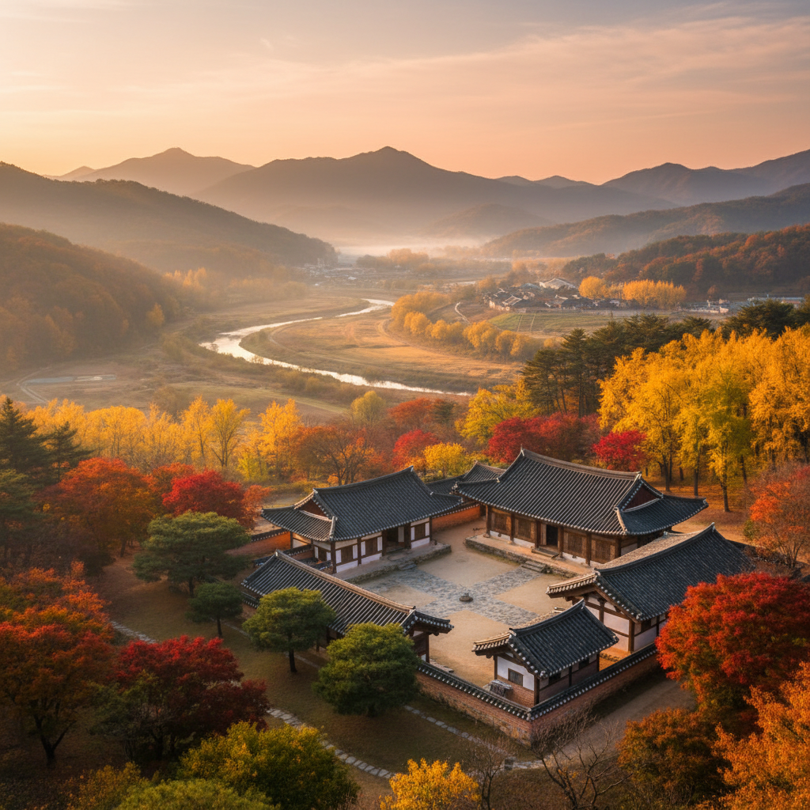
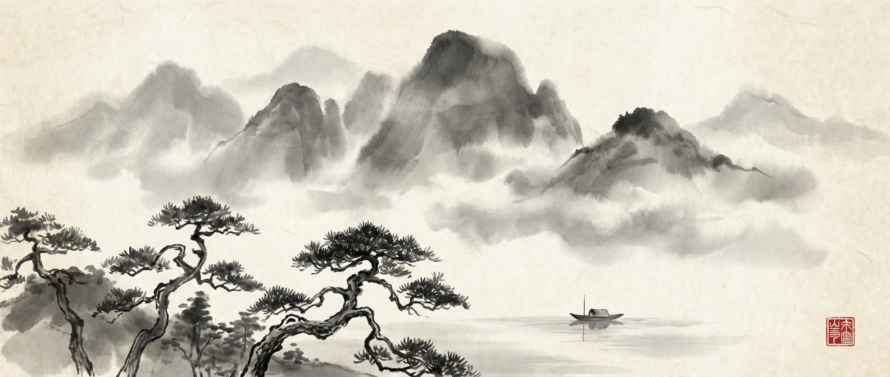
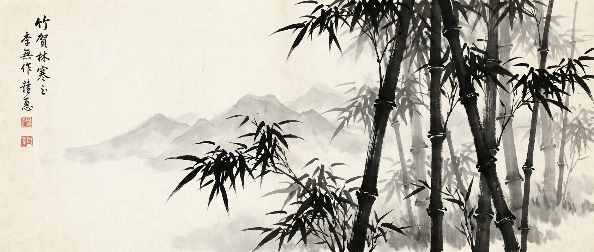
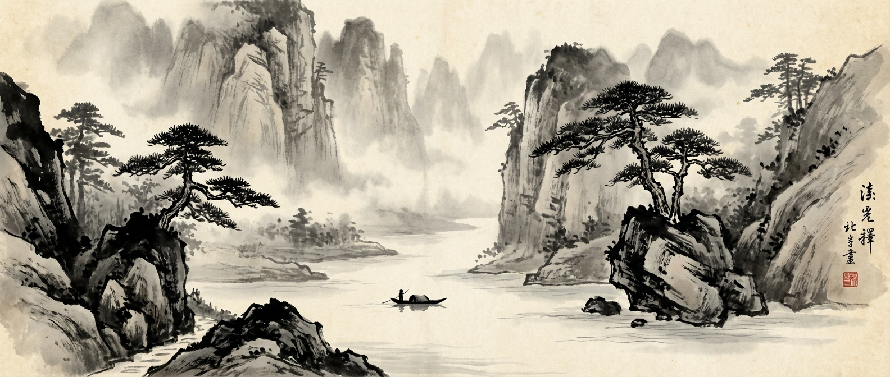

개회식
개회사: 김윤경 (학회 회장)
사회: 박성일 (서울대)


존경하는 회원 여러분께,
겨울의 문턱에서, 한국철학의 학문적 성과와 윤리교육의 미래 방향을 함께 모색하기 위해
"한국철학과 윤리교육"이라는 주제로 2025년 한철사 추계학술대회를 마련하였습니다.
이번 학술대회는 한국 철학의 근본정신을 오늘의 윤리교육 현실 속에 어떻게 적용할지를 모색하고
재조명하는 뜻깊은 자리가 될 것입니다.
이에 조선의 유교 가족윤리의 스펙트럼 그리고 오늘날 공교육의 변화 속 한국윤리 교육의 대응을 살펴보고 도덕경, 훈민정음, 조선어 교재 등 다양한 주제를 통해 한국철학과 윤리교육의 연계 가능성을 탐구해보고자 합니다.
오늘의 학문적 논의가 전통의 탐구를 넘어, 윤리교육의 새로운 지평을 여는 발판이 되기를 기대합니다.
바쁘신 일정에도 부디 참석해 주시어 자리를 빛내 주시기를 바라옵니다.
회원님들의 깊은 애정과 참여가 한국철학 발전에 든든한 밑거름이 될 것입니다.
감사합니다.
한국철학사연구회 회장 김윤경 드림
개회사: 김윤경 (학회 회장)
사회: 박성일 (서울대)
발표: 이숙인 (서울대)

발표: 김민재 (한국교원대)
발표: 유종영 (경인교대)
논평: 성신형 (숭실대)

발표: 김단우 (광문고교사)
논평: 윤민향 (경희대)

발표: 서근식 (성균관대)
논평: 이선경 (동국대)

발표: 박효정 (연세대)
논평: 김한근 (연세대)

좌장: 최영성 (한국전통문화대)
한국철학사연구회
학회 이메일로 문의 바랍니다.
hanchulsa@naver.com